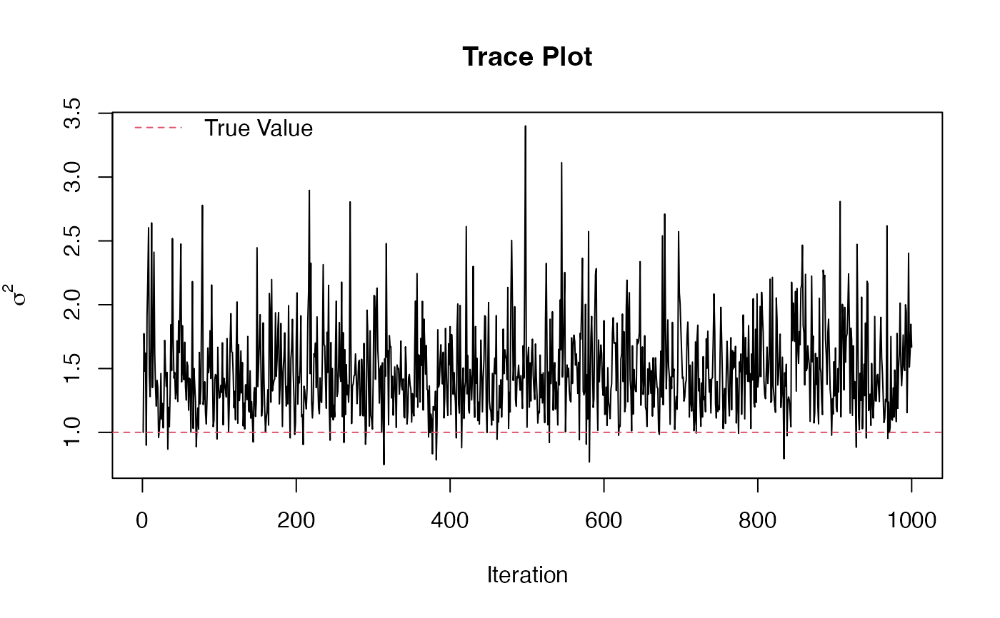
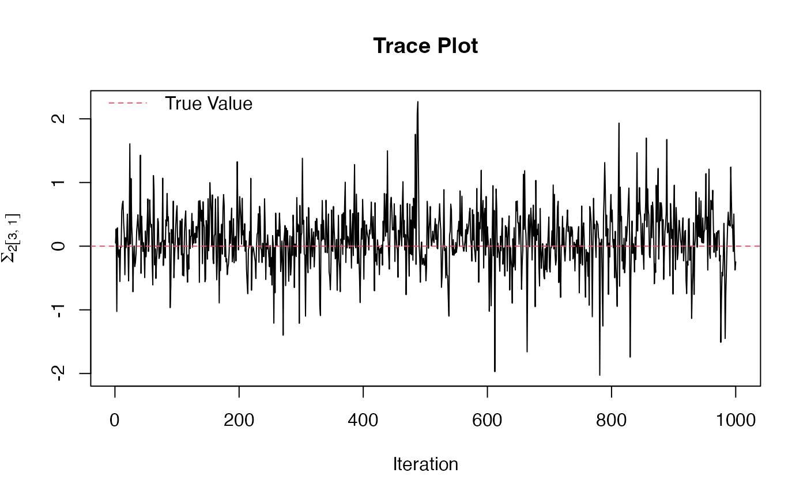

equi_mcmc to component covariance matrices.R/post_equi_mcmc.R
convert_cov.RdThis takes the output from equi_mcmc, which are the inverses of the
lower-triangular Cholesky square roots of the component covariance matrices,
and returns the component covariance matrices. These are the more useful
posterior draws to use in actual data analysis.
convert_cov(equi_mcmc_obj)The output from equi_mcmc, which contains a list.
The first element is a list containing the posterior draws of the inverses
of the lower-triangular Cholesky square roots of each component covariance
matrix. The second list element is a total variation parameter, but the
square root of the version used in calculating the overall covariance
matrix.
cov_post A list containing the posterior draws of each
component covariance matrix.
sig2_post A vector containing the posterior draws of the total
variation parameter.
The output from equi_mcmc is the inverse of the lower-triangular
Cholesky square root of each component covariance matrix. This output is
convenient for calculating the Bayes rule under multiway-Stein's loss (see
get_equi_bayes). Call one of these outputs from
equi_mcmc \(\Psi\). Then this function calculates \(\Sigma =
\Psi^-1\Psi^-T\), which are the posterior draws of the component covariance
matrices. These component covariance matrices are constrained to have
determinant one, hence there is a total variation parameter \(\sigma^2\).
Gerard, D., & Hoff, P. (2015). Equivariant minimax dominators of the MLE in the array normal model. Journal of Multivariate Analysis, 137, 32-49. https://doi.org/10.1016/j.jmva.2015.01.020 http://arxiv.org/pdf/1408.0424.pdf
#Generate data whose true covariance is just the identity.
p <- c(4,4,4)
X <- array(stats::rnorm(prod(p)),dim = p)
#Then run the Gibbs sampler.
mcmc_out <- equi_mcmc(X)
cov_out <- convert_cov(mcmc_out)
# Some trace plots.
plot(cov_out[[2]], type = 'l', xlab = 'Iteration',
ylab = expression(sigma ^ 2), main = 'Trace Plot')
abline(h = 1, col = 2, lty = 2)
legend('topleft', 'True Value', col = 2, lty = 2, bty = 'n')

k <- sample(1:length(p), size = 1)
i <- sample(1:p[k], size = 1)
j <- sample(1:p[k], size = 1)
plot(cov_out[[1]][[k]][i, j, ], type = 'l', xlab = 'Iteration',
main = 'Trace Plot',
ylab = substitute(Sigma[k][group('[', list(i, j), ']')],
list(k = k, i = i, j = j)))
abline(h = 1 * (i == j), lty = 2, col = 2)
legend('topleft', 'True Value', col = 2, lty = 2, bty = 'n')
